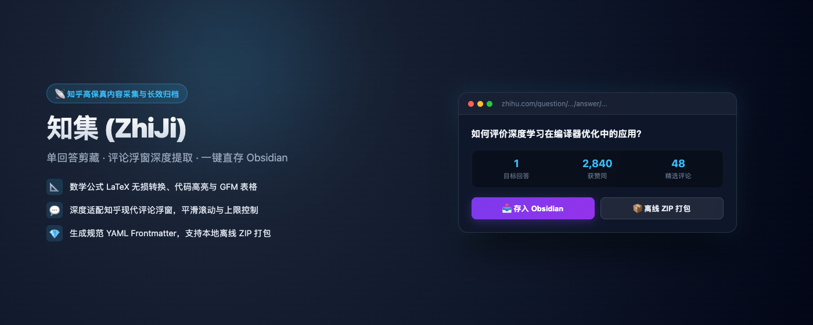
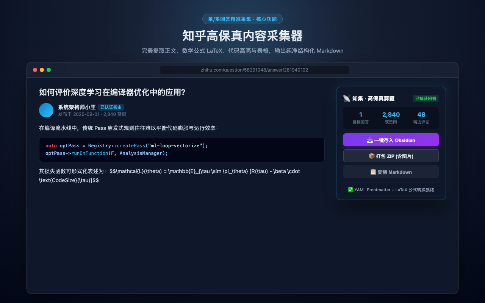
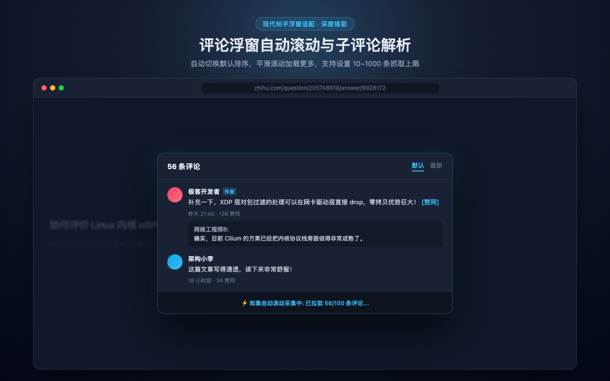
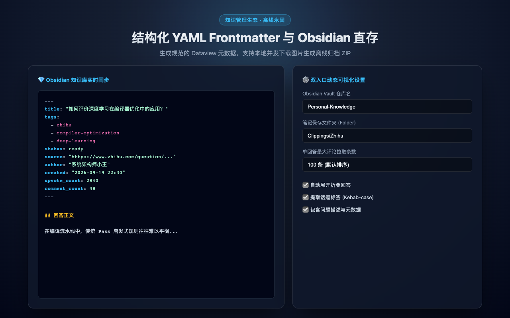

一键将知乎回答与专栏文章精准转化为高规范 Markdown。完美支持 LaTeX 数学公式、代码高亮、高清配图、多级评论捕获、Obsidian 本地零感直存与离线 ZIP 归档。

告别杂乱的网页格式碎片，知集让优质答案与干货长文以最纯粹的排版进入你的第二大脑。
无论知乎问答（单回答精准采集 / 多回答批量扫描）还是专栏长文（/p/*），均能精准隔离正文，自动剥离侧边栏、推荐阅读与热搜干扰。
将行内与块级公式转换为标准 KaTeX 格式（$ 与 $$），识别代码语言标识，知乎卡片链接与 GFM 表格原生还原。
自动滚动加载评论，精准还原「A 回复 B」的层级关系，支持作者徽章标识、点赞统计，知乎专有表情自动转为文本说明。
基于官方原生 obsidian://new 协议唤起，零第三方插件依赖，无需申请任何 Token 或开启本地端口，一键直接写入指定知识库。
自动下载原图并保存至本地 images/ 文件夹，将文档内的图链重写为相对路径。即便知乎原帖或图片被删，归档依旧完整。
右下角轻量化交互胶囊，不侵占知乎原有阅读空间。内置可视化设置弹窗，评论抓取数量、图片打包、Obsidian 参数实时热生效。
纯纯的原生沉浸交互体验，所见即所得的整洁排版。



支持主流浏览器扩展或 Tampermonkey 油猴脚本，只需 1 分钟即可开启采集。
支持 Chrome / Edge / Brave / Arc 等基于 Chromium 的现代浏览器。
zhiji-chrome.zip 并在本地解压；chrome://extensions/；适合已安装 Tampermonkey / ScriptCat / Violentmonkey 的用户。
基于 Obsidian 官方原生 URI 协议（obsidian://new），无需安装任何第三方插件或申请密钥。
MyNotes），并可选填写归档子文件夹（例如 zhihu/）：
每篇导出的文档顶部均包含标准的 YAML Frontmatter，涵盖标题（title）、作者（author）、原文直链（url）、采集时间（date）、知乎标签（tags）以及点赞数（upvotes）等结构化信息。
知集深度适配了知乎专栏真实 DOM 树，将作用域严格锚定在 <article class="Post-Main"> 容器内，彻底剔除了推荐阅读、热搜词、侧边栏等与正文无关的外层杂质。
知集默认按当前最佳排序平滑滚动抓取评论，抓取速度极快（通常 1~2 秒内抓完数十条）。您也可以在设置面板中自定义最大抓取评论数（支持 0~500 条），若设为 0 则直接跳过评论。
绝无可能。知集 100% 运行于您的浏览器本地沙箱中，零远程代码、零分析打点、零隐私追踪，所有数据与图片直接在您的本地内存与磁盘中流转，代码已完全开源以供审查。